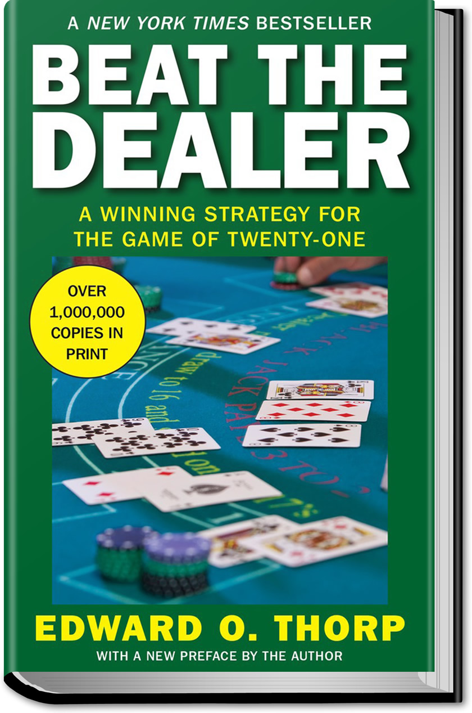

«Beat the Dealer», 1962
Профессор математики написал книгу, как обыграть казино в блэкджек.
Ключевое отличие от рулетки:
Если из колоды вышло много мелких карт (2–6), в колоде осталось больше крупных (10, J, Q, K, A).
Крупные карты выгодны игроку — повышают шанс набрать 21 и шанс, что дилер «перебрал».
Простая система отслеживания карт
| Карта | Счёт | Логика |
|---|---|---|
| 2, 3, 4, 5, 6 | +1 | мелкая ушла → выгодно |
| 7, 8, 9 | 0 | нейтральная |
| 10, J, Q, K, A | −1 | крупная ушла → невыгодно |
Счёт высокий (+5 и выше) → в колоде
много крупных → ставь больше!
Счёт низкий или отрицательный →
преимущество у казино → ставь минимум.